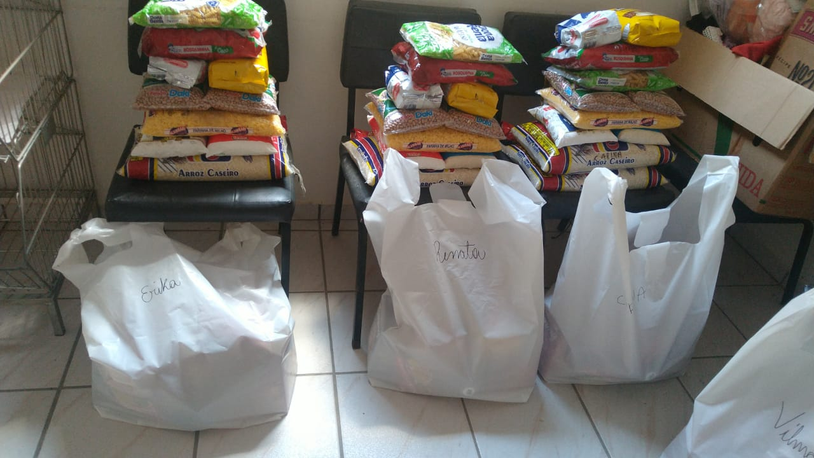

Casa de Orações Irmão Anselmo
Home
Galeria de Fotos

Entrega de Cestas Básicas
Entrega de Cestas Básicas
Entrega de Prendas do Natal Social
Doação recebida de 1500 pacotes de Miojo para serem distribídos as famílias atendidas. Obrigado Nissin Ibiuna